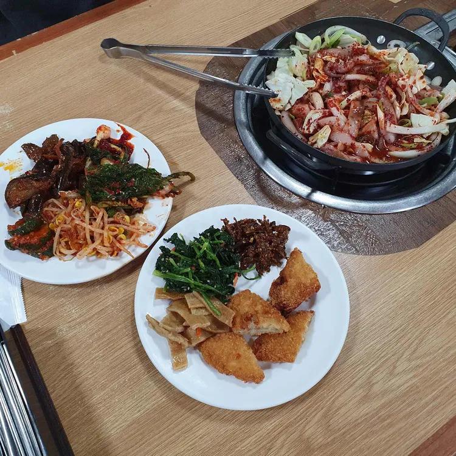

진미기사식당 상세정보
진미기사식당 대표정보
다이닝코드 진미기사식당 정보
네이버 플레이스 진미기사식당 정보
대표이미지
상호
구분
평점
위치

진미기사식당
기사식당, 한천
4.1
서울특별시 강북구 한천로 1163 1층 진미기사식당
진미기사식당 위치
allowfullscreen loading="lazy" referrerpolicy="no-referrer-when-downgrade">